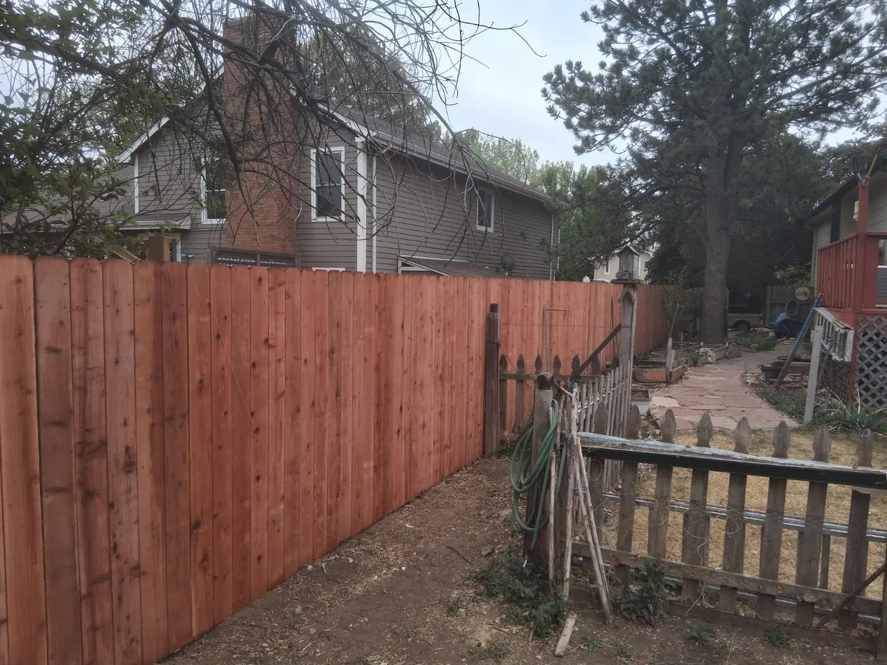
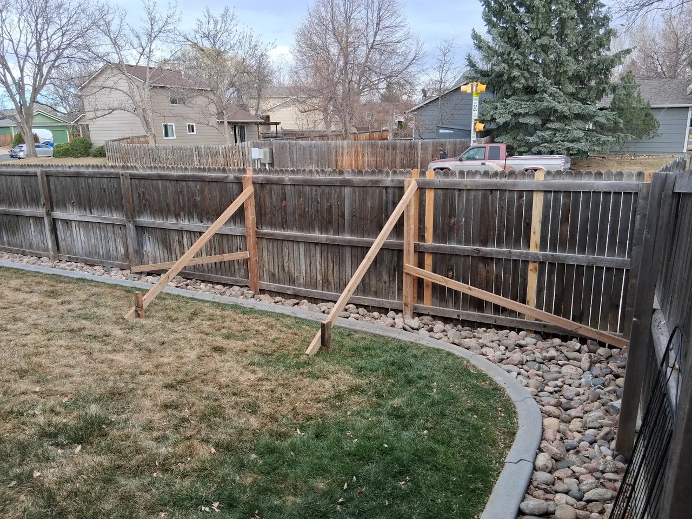

Privacy Fence Installation
Finished privacy fence installation.
Alpine Deck & Fence installs and repairs privacy fences, gates, and replacement sections for homeowners in Fort Collins and nearby areas.

Finished privacy fence installation.

Fence replacement and rebuilt sections.

Fence repair work and before-and-after results.
Read more about privacy fencing, replacement work, gates, and local service coverage.
Fence contractor information →Review common wind damage, post, gate, rail, and replacement-section repairs.
Fence repair information →Send photos, approximate linear footage, gate count, and whether it is repair-only or full replacement.